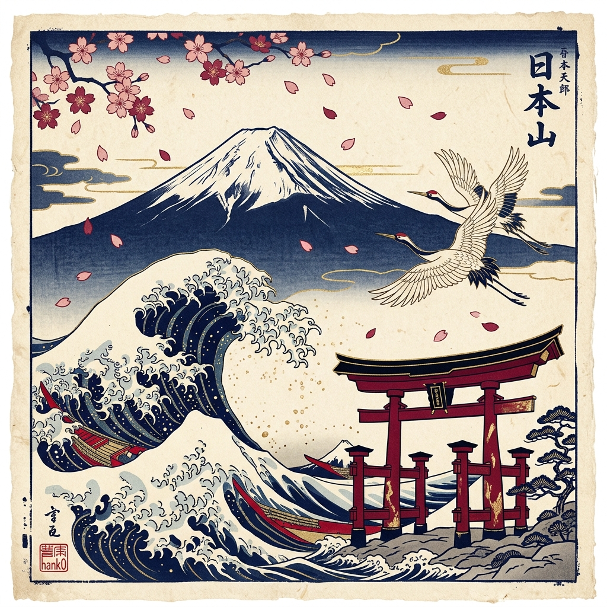
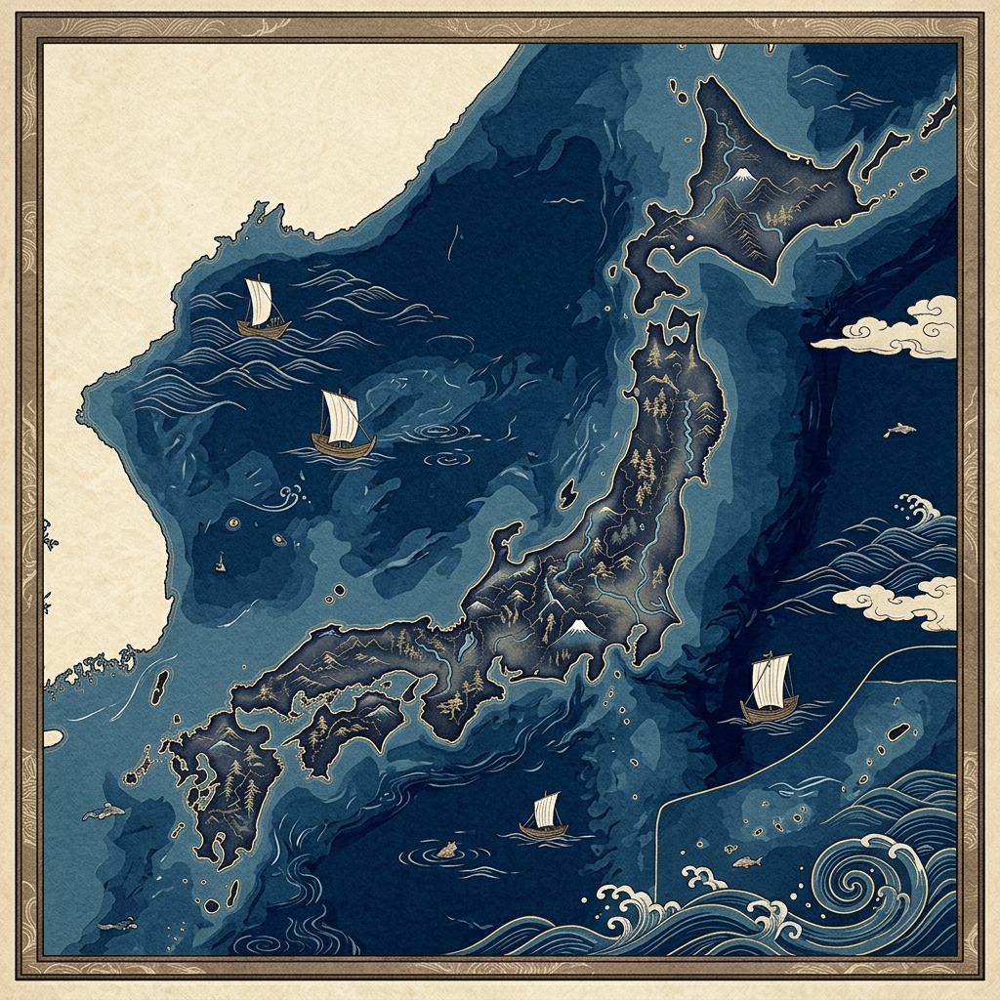

Japan as an Island Country
Shaped by Ocean and Earth
Japan is an island country in East Asia surrounded by the Pacific Ocean and the Sea of Japan. Because Japan is made of many islands, nature and the ocean have always been a very important part of everyday life, culture, transportation, and food.
Japan is also a very mountainous country, so many cities are built between the mountains and the coast. This geography affects how people live and how cities develop. Japan also experiences many natural events like earthquakes, volcanoes, typhoons, and tsunamis because of its location near tectonic plate boundaries.
I think Japan is very interesting to study in Earth science because nature has a strong influence on the country. The mountains, oceans, forests, and changing seasons all help shape Japanese culture and daily life.

Nature Across Japan
Mount Fuji
Mount Fuji is the tallest mountain in Japan and one of the country’s most famous natural landmarks. It is an active volcano that has important cultural and spiritual meaning in Japanese history and traditions.
Earthquakes
Japan experiences many earthquakes every year because the country is located near major tectonic plate boundaries. Earthquakes have influenced the way buildings, cities, and disaster preparation systems are designed in Japan.
Cherry Blossoms
Cherry blossoms are one of the most famous symbols of Japan and reflect the country’s seasonal climate. Every spring, people gather to enjoy the blooming sakura trees, which are connected to Japanese culture and nature.
Volcanoes
Japan has many active volcanoes because it is part of the Pacific Ring of Fire. Volcanic activity has helped shape Japan’s mountains, landscapes, hot springs, and natural environments.
Typhoons
Typhoons are common in Japan during late summer and early autumn and often bring strong winds and heavy rainfall. These storms can cause flooding, landslides, and damage in different parts of the country.
The Japanese Alps
The Japanese Alps are large mountain ranges located in central Japan and are known for their beautiful natural scenery. These mountains also affect regional climates, snowfall, tourism, and transportation across the country.